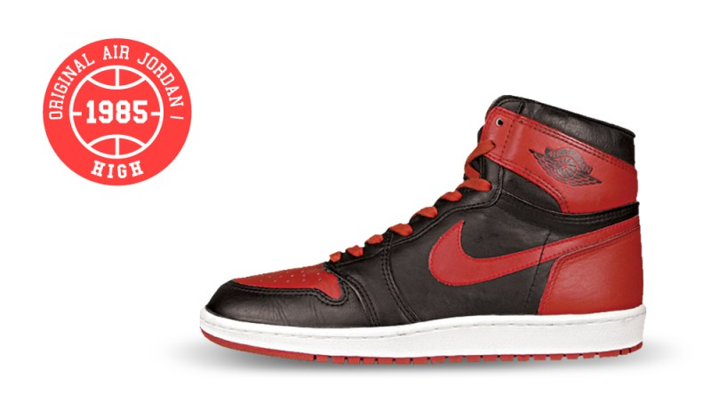
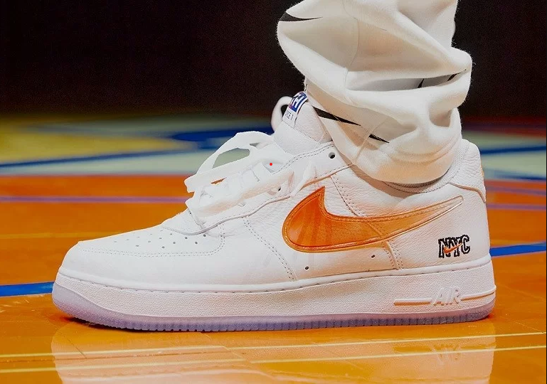
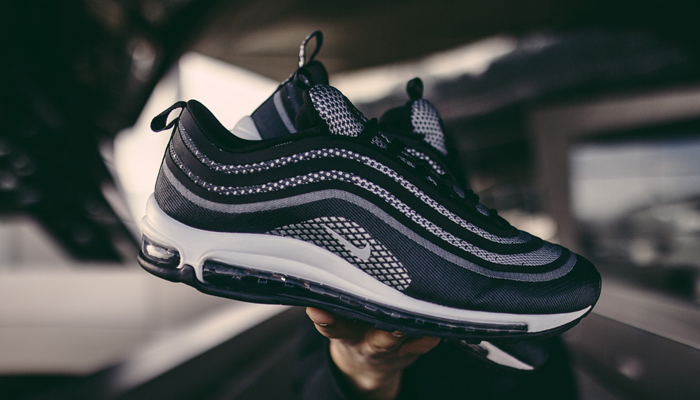
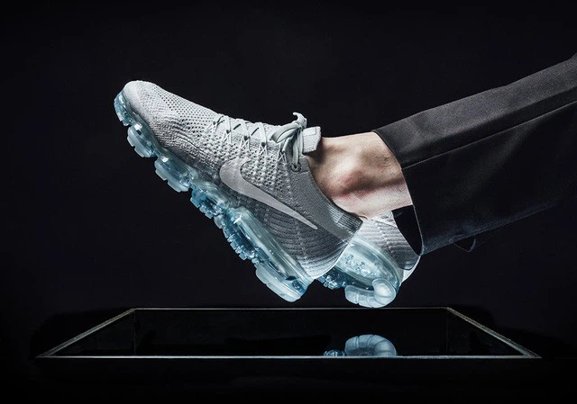
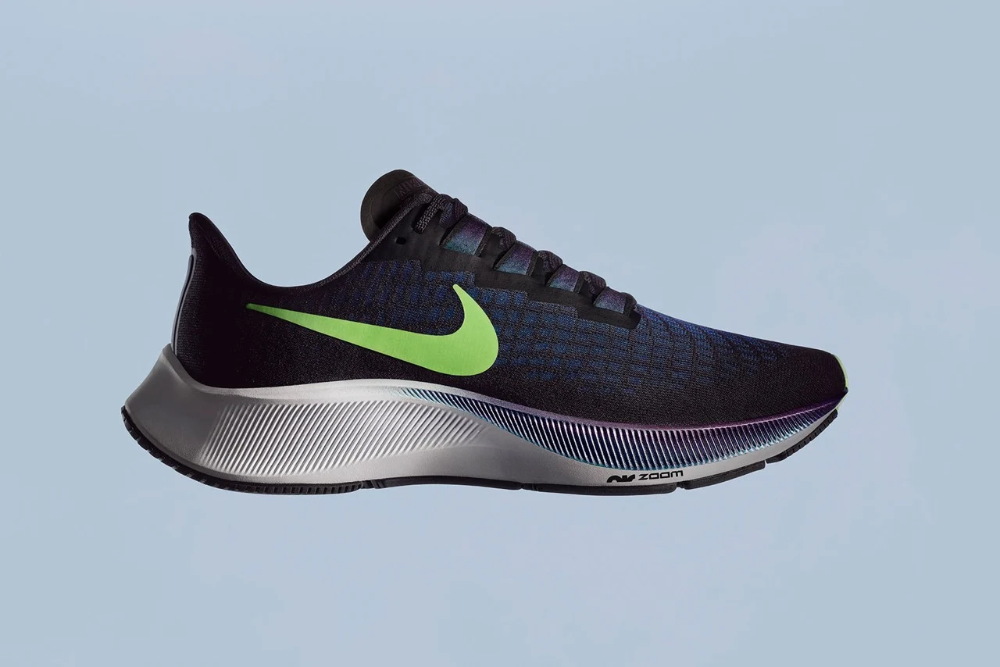
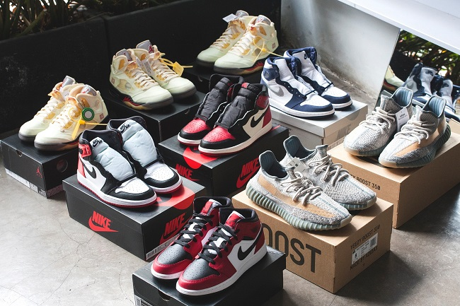
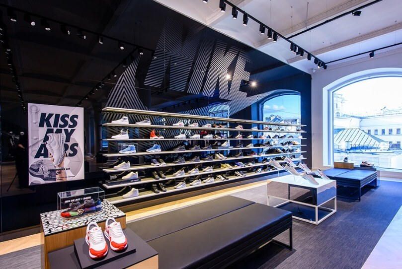
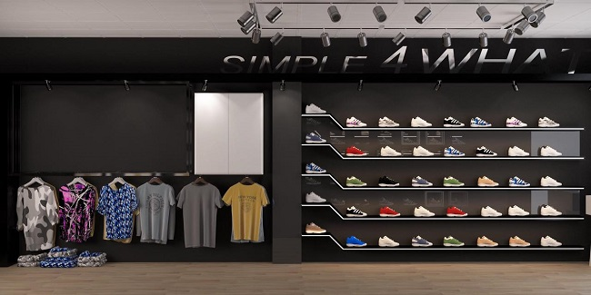

Nike là một trong những thương hiệu thể thao nổi tiếng nhất trên thế giới. Từ học sinh tiểu học cho đến các vận động viên chuyên nghiệp, không ai có thể phủ nhận sức hấp dẫn của Nike. Nếu bạn khảo sát xem có bao nhiêu người đã hoặc đang sở hữu các sản phẩm của Nike, thì con số này sẽ khiến bạn bất ngờ. Nhắc đến Nike – thương hiệu giày thể thao được ưa chuộng hàng đầu thế giới với giá cả đắt đỏ và chất lượng đỉnh cao, ta không thể không biết đến logo mang tính biểu tượng nhất thế giới và câu slogan kinh điển "just do it" cùng lịch sử gần 50 năm hình thành và phát triển.
Đối với những Sneakerhead chân chính mà nói, không ai là xa lạ với dòng giày bóng rổ huyền thoại của Nike là Air Jordan 1. Ra mắt lần đầu vào năm 1985 ( ở một vài trang thông tin khác là 1984) với thiết kế dành riêng cho siêu sao bóng rổ Micheal Jordan tạo thành một phân nhánh riêng của Nike với tên gọi là 'Jordan Brand' và cũng chính thức mở đầu cho kỉ nguyên của Sneaker hiện đại bao trùm lấy làng thời trang Thế Giới. Sẽ có nhiều bạn cho rằng thiết kế đầu tiên của Jordan Brand là phối màu Chicago Bull huyền thoại với ba màu sắc tiêu biểu "đỏ, đen, trắng" tuy nhiên phối màu đầu tiên do Peter Moore thiết kế lại chỉ gồm 2 màu sắc chủ đạo là "đỏ, đen" (Bred) theo màu áo đấu của đội tuyển Chicago Bull. Tuy nhiên thiết kế nhanh chóng bị bác bỏ bởi chủ tịch hội đồng giải NBA bởi cho rằng thiết kế giày có quá ít màu trắng (theo luật của NBA giày thi đấu phải có màu chủ đạo là trắng). Tuy nhiên, MJ vẫn mang đôi giày vào thi đấu và chấp nhận khoản tiền phạt là 5000$ hoàn toàn do Nike chi trả do số tiền này là không đáng kể so với hiệu ứng Maketting có thể đem lại cho hãng. Và MJ cùng với thiết kế đầu tiên này đã đạt danh hiệu Rookie of the Year đầu tiên trong sự nghiệp của mình.

Nike Air Force 1 là đôi sneaker được các tín đồ sneaker đánh giá là đôi giày sneaker hoàn hảo nhất mà NIKE từng làm ra. Thiết kế đẹp mắt, sang trọng và mang tính ứng dụng cao cộng thêm những chiến dịch marketing hoành tráng collab với nhiều nghệ sĩ nổi tiếng hàng đầu thế giới đã giúp giày Nike Air Force 1 giữ vững được ngôi vương trong làng sneaker dù đã ra mắt được gần 40 năm. Mục đích ra đời đầu tiên của đôi giày này là để chơi bóng rổ và ở thời điểm đó môn thể thao được mọi người ưa chuộng nhất chính là bóng rổ nên đa số đều lựa chọn những đôi Nike Air Force Mid để bảo vệ mắt cá chân. Tuy nhiên phiên bản tạo được tiếng vang nhất lại là phiên bản giày nike air force 1 low vì mang tính thời trang cao hơn, thực tế doanh số bán hàng cũng cho thấy đây là mẫu giày Nike Air Force 1 bán chạy nhất cho đến ngày nay.

Giày Nike Air Max được đặt tên theo công nghệ mà nó sở hữu – công nghệ Air Max sử dụng phần lớn (max) đệm khí air cho phần đế giữa. Đôi giày này không chỉ sở hữu công nghệ đệm tuyệt vời mà còn chiếm lĩnh một vẻ ngoài sang trọng và đẳng cấp đến bất ngờ. Hiện nay, giày Nike Air Max được mệnh danh là dòng giày tiên phong mũi nhọn của hãng Nike và nhận được lượt tìm kiếm nhiều nhất trên các trang mạng. Dòng giày Nike Air Max cũng có tên tuổi trong nhiều trào lưu văn hoá như Hiphop, Gabber hay thậm chí là cả tầng lớp người lao động. Ngoài ra, trong những năm 1990, tại thị trường Nhật Bản còn nổi lên hiện tượng “săn tìm Air Max”. Bởi sự ảnh hưởng khá lớn của hiện tượng này mà giá giày ngày càng có xu hướng tăng cao hơn, gây ra nhiều trận ẩu đả chỉ vì một đôi giày hay hơn nữa là dẫn đến sự xuất hiện của hàng fake. Nếu bạn yêu thể thao nhưng cũng muốn mình trông thời trang, sành điệu và nắm bắt xu hướng thì đôi giày Nike Air Max là sản phẩm bạn không thể bỏ qua.

Đúng vào dịp kỷ niệm 30 năm Air Max năm ngoái, Nike đã chính thức phát hành phiên bản mới nhất, đột phá nhất của dòng giày Air Max - Vapormax. Với việc loại bỏ hoàn toàn những thanh chống bằng nhựa TPU bên trong túi Air, thân giày làm hoàn toàn từ chất liệu dệt Flyknit, Vapormax hứa hẹn sẽ đem đến hiệu năng vượt trội hơn, nhẹ hơn hẳn những đôi Air Max ra mắt trong quá khứ. Dù chưa thể vượt mặt BOOST của adidas, Vapormax vẫn để lại những dấu ấn rất riêng, thể hiện tham vọng phát triển bền vững của Nike. Ngoài ra, công nghệ gia công hiện tại đã cho phép Nike sử dụng tới 75% vật liệu tái chế vào sản xuất bộ đệm Vapormax. Có thể nói, đây là bộ đệm Air Max thân thiện nhất với môi trường từ trước đến nay.

Nếu bạn đang sở hữu một đôi Nike Air Zoom Pegasus phiên bản nào đó, chắc hẳn bạn sẽ rất hài lòng về hiệu năng và thẩm mỹ nó mang lại trong quá trình sử dụng, hỗ trợ đầy đủ cho chạy bộ, thiết kế gọn gàng dễ dàng cho nhu cầu hàng ngày so với các dòng giày chạy bộ khác. Hãng thể thao số một thế giới Nike lần đầu giới thiệu dòng giày chuyên chạy bộ Pegasus vào năm 1983. Được lấy cảm hứng từ tên gọi Nike với văn hóa Hy Lạp cổ đại, cái tên Pegasus cực kì mỹ miều mường tượng tới vó chân ngựa thần đạp khỏi những đám mây, đập đôi cánh diễm lệ nhẹ nhàng vút bay trong Thần thoại Hy Lạp. Không ai có thể tưởng tượng được sức sống thần kì của dòng giày chạy bộ đã trải qua 38 năm tồn tại cùng 31 phiên bản cập nhật, Pegasus đồng hành cùng những đôi chân vĩ đại nhất lịch sử loài người bứt phá những giới hạn. Bài viết này sẽ không review chi tiết dòng giày "đẻ trứng vàng" của Nike mà giới thiệu với các bạn những sự thật thú vị xung quanh nó.

Hiện nay trên thị trường, các thương hiệu nổi tiếng bị làm giả vô cùng tinh vi và giày nike cũng không ngoại lệ, điều này đã làm người dùng vô cùng hoang mang không biết đâu là thật - giả. Nỗi sợ vì mua phải giày kém chất lượng, giày fake, từ nay không còn lo lắng nữa vì đã có Nike Store - cửa hàng phân phối giày chính hãng hàng đầu Việt Nam. Những sản phẩm đến từ Nike Store luôn đảm bảo chất lượng 100%, fullbox, nguyên tem và mức giá hợp lý.




Cảm ơn khách hàng đã tin tưởng và đồng hành cùng Nike Store